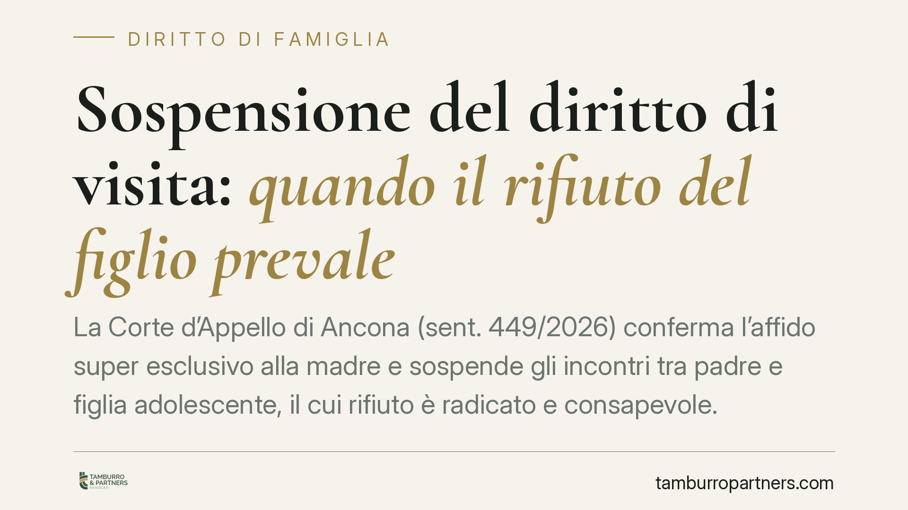

Sospensione del diritto di visita: quando il rifiuto del figlio prevale
La Corte d'Appello di Ancona (sent. 449/2026) conferma l'affido super esclusivo alla madre e sospende gli incontri tra padre e figlia adolescente, il cui rifiuto è radicato e consapevole. La Corte esclude però la decadenza dalla responsabilità genitoriale: mancano i presupposti più gravi. Una decisione che chiarisce la differenza tra limitare la frequentazione e privare un genitore del suo ruolo.

Il caso deciso dalla Corte d'Appello di Ancona
Una figlia adolescente rifiuta in modo stabile di incontrare il padre. La madre chiede l'affido esclusivo rafforzato e la sospensione degli incontri. I giudici di secondo grado confermano la linea del tribunale: affido super esclusivo alla madre e sospensione del diritto di visita.
Ma la Corte si ferma qui. Respinge la richiesta più drastica, quella di dichiarare il padre decaduto dalla responsabilità genitoriale. Il motivo è semplice: sospendere gli incontri e cancellare il ruolo di genitore sono due cose diverse, con presupposti diversi.
Inquadramento normativo
Il punto di partenza è l'art. 337-ter cod. civ., che sancisce il diritto del minore a mantenere un rapporto equilibrato con entrambi i genitori. È un diritto del figlio, prima ancora che del genitore. Questo spiega perché, quando il rapporto diventa dannoso per il minore, il diritto di visita può essere compresso.
L'art. 337-quater cod. civ. disciplina l'affidamento esclusivo, che il giudice dispone quando l'affido condiviso è contrario all'interesse del minore. Nella prassi si parla di affido "super esclusivo" quando al genitore affidatario sono attribuite anche le decisioni di maggiore interesse (salute, istruzione, residenza) senza concerto con l'altro.
Il livello più grave è invece quello dell'art. 330 cod. civ.: la decadenza dalla responsabilità genitoriale. Scatta quando il genitore viola o trascura i suoi doveri, o abusa dei relativi poteri, con grave pregiudizio per il figlio. Non basta una relazione interrotta o conflittuale: serve una condotta attiva o omissiva di particolare gravità.
Perché la Corte sospende ma non fa decadere
La chiave della decisione è la distinzione tra due situazioni.
La sospensione degli incontri risponde all'interesse attuale del minore. Qui la Corte valorizza il rifiuto della ragazza, descritto come consapevole e radicato: non un capriccio passeggero, ma una posizione maturata. Imporre con la forza un rapporto non voluto rischierebbe di produrre un danno ulteriore. La sospensione è quindi una misura di protezione, in linea di principio reversibile.
La decadenza, al contrario, sanziona la condotta del genitore. Richiede che il padre abbia tenuto comportamenti gravemente pregiudizievoli. La Corte non li ravvisa: l'allontanamento della figlia non equivale, di per sé, a una colpa del genitore tale da giustificare la perdita del ruolo. Mancano i presupposti più gravi previsti dall'art. 330.
Implicazioni pratiche
Per chi vive un conflitto familiare, la pronuncia offre alcuni punti fermi.
Il primo: la volontà di un figlio adolescente ha un peso crescente. Più il minore si avvicina alla maggiore età, più il suo rifiuto consapevole può orientare la decisione del giudice. Non è un diritto di veto, ma un elemento valutato con attenzione.
Il secondo: sospensione non significa esclusione definitiva. La misura guarda al presente e può essere rivista se le condizioni cambiano. Spesso il percorso passa dal supporto dei servizi sociali e da interventi che mirano a ricostruire, dove possibile, il rapporto.
Il terzo: ottenere la sospensione degli incontri non comporta automaticamente la decadenza dell'altro genitore. Sono domande distinte, con oneri probatori distinti. Chi chiede la decadenza deve dimostrare condotte gravi, non la semplice distanza relazionale.
Cosa fare in concreto
- Distinguete le domande. Valutate se il vostro obiettivo è regolare gli incontri o incidere sulla responsabilità genitoriale: sono piani diversi con prove diverse.
- Documentate i fatti. Raccogliete elementi concreti e datati sulla situazione del minore e sulla sua volontà, evitando ricostruzioni generiche.
- Ascoltate il minore senza strumentalizzarlo. Un rifiuto manipolato pesa diversamente da un rifiuto autentico: la genuinità della posizione viene vagliata dal giudice.
- Considerate il percorso dei servizi sociali. La sospensione è spesso accompagnata da interventi di sostegno: inquadrateli come opportunità, non come ostacolo.
- Fatevi assistere per tempo. Le misure sono rivedibili: una strategia coerente fin dall'inizio evita decisioni affrettate e irreversibili sul piano dei rapporti.
Ogni famiglia ha il suo equilibrio.
Separazione, divorzio, affidamento, assegno: se vuoi un confronto riservato su una specifica situazione, scrivi allo studio. Ti rispondiamo entro un giorno lavorativo.